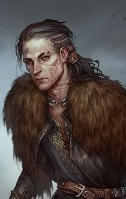

| Shōki Kurenai Moto | The Sin of Wrath · Moto, Kurenai line · as of the present reckoning, three centuries after the Hall |
| Epithet | The Sin of Wrath. The Kurenai wrote it where his name had been, and everyone kept it. Kharven drovers say Old Furnace, northern nurseries are frightened with the burning man in irons, and the Moto scholars say the Unburied, quietly |
| Concept | Everything you do to him he keeps as fire with your name on it, and he pays every bit of it back. |
| Stat line | Stage XI Dissonance · Grandmaster (Flawless) Level 398 · Fractured · Chōjiri (帳尻), He Who Balances the Book Body XI Mastered, IV (Rot-Born) · Fate X Walked 30%, III · Lenses: home + 3 |
| Combat grammar | Percussion |
| Aura and sound | color: Tarturon’s hot amber-red at Dissonance clarity, running to ember-orange where Exuroth has tempered it, brilliant and grained like a filament overdriven, rimmed black-violet where Vantabriel keeps what it takes · sound: a blast-furnace roar under a ringing of iron |
| How he moves | Tall, lean and upright, a drawn wire that moves as if it weighed less than it does, hands low and open, no guard at all. He walks straight at a man and lets the first blow land, because a blow that lands is a blow he keeps. |
| Stack | sustainable 725 in Flux, Overchannel and Overflow, 700 in Absorption and Tolerance · cap two steps on the hidden scale over the sustainable figure (to 1,200 on those five) · layers: SHAKUNETSU always standing; ABI or ENMA-CHŌ when called; the grudge bank |
| Bonded weapon | the Hall Irons |
| Kit | a long leather coat edged in gold knotwork over a black shirt, a rough fur mantle, a low red-brown belt hung with thirteen iron bells, boots that smoke on wet ground, and the piece people talk about first: the Hall Irons, Legendary condemned’s cuffs fused to his wrists, which are also what he hits you with |
| Voice | ”Thirty-one men in your chest, and you ask me for mercy. Entered. Stand still and I will close the book.” · speaker type: a hanging judge reading sentence over the noise of a foundry floor |
| Next gate | Stage XII, Emanation · Catalyst: passage out of Dissonance, the fractures made features, and his Coherence nowhere near it · holds at Level 320, which his 398 already passes: only the Catalyst is wanting, the counter has nearly stopped, and two Levels more without it would bring him into Residual Strain |
I. Identity
| Field | Value |
|---|---|
| Full Name | Shōki Kurenai Moto |
| Pronunciation | SHOH-kee koo-REH-nai MOH-toh |
| Alias / Title | The Sin of Wrath · The Unburied |
Also Known As
| Name | Who says it |
|---|---|
| Tsumi, the Sin | the Kurenai register, which no longer writes his name |
| Old Furnace | the Kharven drovers who have seen his ground |
| the Unburied | the Moto scholars’ word for what he became |
| Field | Value |
|---|---|
| Race / Lineage | Human by birth, demon by corruption. Archaic Bloodline, Moto, the Kurenai cadet line of executioners |
| Age | Three hundred and fifty-four years; the body stopped at forty-one, the night of the Hall |
| Realm / Faction | None. Struck from the Kurenai register; proscribed by the Holy Sea as a Cacodaemonic Inversion of the third grade, the Corruption of Conviction |
| School and sect rank | Kurenai Hall of the Blade · was master-headsman’s first hand, the stroke that closes the register; now nothing |
Renown
| Among | What they say of him |
|---|---|
| the public | a nursery threat in the north, the burning man in irons |
| the army | avoided by name; companies route around his ground |
| the sects | proscribed, bounty open and uncollected |
| the guilds | the Arbitration Division keeps a file and has never sent a second agent |
| Field | Value |
|---|---|
| Epithet | the Sin of Wrath, given by the Kurenai, kept by everyone |
| Catalyst Event | The Hall of Verdicts, the morning the seven chairs voted his wife’s death and put him in the condemned’s irons for refusing the blade |
| Refusal | He will not wear irons again or kneel to any verdict, whatever is offered, and he will not take back the name the Kurenai struck |
| Conviction | Nothing done is finished until it is paid, and every chest he reads carries a debt |
| Arc kind | Corruption, complete; now flat |
II. Soul Architecture
| Field | Value |
|---|---|
| Level | 398; it holds Dissonance (301) and would hold Emanation (320), and Residual Strain waits for him past 400 |
| Temperance Stage | XI, Dissonance · Grandmaster. Trapped in it: he entered at the block and never passed through |
| Path | Body XI Mastered · Fate X Walked 30%. No Spirit, and none of the far end of Fate; the gates hold Alacrity, Clarity, Ward and Retention low, and Sovereignty under 276 |
| Mastery | Body IV, Luminous, of the Rot-Born variant: a corrupted Shell that amplifies and corrodes with every working; the lead · Fate III, Spinner: Walked a rung behind, Hametsu no Gō the grip that lifts its ceiling |
| Yield (η) | 0.71, below what a hall expects of a Grandmaster. Twenty-nine parts in every hundred burn in the furnace of his Shell and leave him as heat |
| Lenses | home Tarturon + 3 held (Exuroth, Ignivale, Vantabriel), the Grandmaster’s count |
| Soul Crystal | Flawless |
| Crystal State | Fractured: an open Dissonance fracture along the line of the block. His moods stain the air; the fracture never closes into a feature |
| Class | Chōjiri (帳尻), He Who Balances the Book · The word is the clerk’s for the foot of an account, where the two columns must come out even. · The soul offered him the headsman’s class at Glory and it grew with twenty-two years of closing the register by the verdict; at the block it turned into this, a class that enters every debt and cannot write one off. · It gives the count, the bank and the answer, and it grows only when a debt is paid in full, as his Body Mastery rises |
| Fate Art | Hametsu no Gō, the Work of Ruins, alone since the block · grip: Kurenai blood and three centuries · Fate III |
| Attraction / Obsession | Obsession Force at full purchase. The gap the Unburied fills is the whole of him |
III. Wellspring Harmonizations
| Wellspring | Folk name | Kind | Depth | What it bends in him | Note |
|---|---|---|---|---|---|
| Tarturon | the Fire of Reckoning | Fate | governing | the reckoning: a fire that burns on what is owed and climbs under moral weight, which nothing can smother once it is lit; the Measurewrights say it carries its own oxidizer | its runaway is the shape of his anger: every burning adds to what is owed, so the debt that lights it is made by the light, and nothing in it can say the account is settled |
| Exuroth | the Trial Flame | Wild | deep | the trial by fire: burned, plunged and burned again, his Shell set harder by every beating and every recovery | pain thresholds rise and the soul holds loads that would shatter lesser vessels, and plunged again too soon, without rest, it comes out hard, brittle and split along the lines of its own trials, which the Measurewrights call quench cracking |
| Ignivale | the Spark | Wild | held | the gap between wanting and doing is near nothing | any stray feeling in the room is beginning enough, and fires his workings before he decides to fire them |
| Vantabriel | the Night | Wild | taken at the block | the night that keeps: what strikes him stays in him, none of it put down, and is carried as a slow heat from inside | his Crystal carries every blow it has ever taken; the black-violet rim of his aura is Vantabriel’s color |
Field
Work architecture
Value
The Kurenai carry the Work of Spirit under the shadow of Ruins. In him the Spirit Work went out at the block and Ruins remains alone, on its own corruption vector: annihilation
IV. Primary Stats
| Primary | Total | Mean |
|---|---|---|
| Vitality | 3,661 | 457.6 |
| Ardency | 3,500 | 437.5 |
| Gnosis | 600 | 75 |
| Dexterity | 1,090 | 136.25 |
| Harmonics | 162 | 20.25 |
| Resilience | 1,050 | 131.25 |
| Tempering | 1,500 | 187.5 |
| Dominion (seven, Throne apart) | 1,595 | 227.9 |
| Throne | not opened | · |
| Field | Value |
|---|---|
| Pool | 13,158 |
| Unspent | 0 |
V. Sub-Stats
| Primary | ||||||||
|---|---|---|---|---|---|---|---|---|
| Vitality | Fortitude 560 | Absorption 700 | Constitution 360 | Hemostasis 520 | Regeneration 321 | Filtration 60 | Tolerance 700 | Threshold 440 |
| Ardency | Flux 725 | Alacrity 175 | Depth 260 | Penetration 640 | Compression 360 | Cascade 400 | Overchannel 725 | Density 215 |
| Gnosis | Perception 320 | Acuity 40 | Forecast 15 | Fluency 20 | Retention 25 | Analysis 120 | Cognition 30 | Vigilance 30 |
| Dexterity | Celerity 350 | Reflex 320 | Finesse 60 | Economy 40 | Evasion 30 | Grapple 200 | Feint 20 | Sequence 70 |
| Harmonics | Attunement 40 | Projection 70 | Breadth 10 | Stability 10 | Empathy 1 | Synergy 5 | Axis 1 | Suppression 25 |
| Resilience | Integrity 300 | Ward 130 | Persistence 260 | Anchoring 190 | Fortification 140 | Hardening 20 | Oath 5 | Continuity 5 |
| Tempering | Clarity 60 | Overflow 725 | Maturity 120 | Coherence 140 | Yield 300 | Ceiling 60 | Capacity 45 | Longevity 50 |
| Dominion | Radius 280 | Sovereignty 275 | Sense 110 | Gravity 320 | Pressure 500 | Command 60 | Fate 50 | Throne not opened |
Field
Note
Value
Flux, Overchannel and Overflow stand at 725 and Absorption and Tolerance at 700, all on or past the line where Dissonance carries fracture risk. Oath stands at 5: a Kurenai’s oath, broken on the black floor, and the stat went with it. Empathy and Axis stand at 1, the ash of what Gisei burned.
VI. Force of Hand
| Measure | Figure | Feat | Carried by | Note |
|---|---|---|---|---|
| Strike Force | Flux 725 | — | Flux 725 | the Measurewrights reckon it at 2 TN to 1 PN peak, 24.3 TJ upward · a blow at the floor of SS costs him about a tenth of his reserve, so his committed blows run SS, and GŌKA at base lands there · Body Path adds its share |
| Lifting | Fortitude 560, Constitution 360 | millions of tonnes held | Fortitude and Constitution | — |
| Travel speed | Celerity 350 | Mach 5 to 25 | Celerity 350 | — |
| Reaction | Reflex 320 | 0.2 to 1 ms | Reflex 320 | — |
| Durability | Fortitude 560, Absorption 700 | before ENSHŌ turns what lands into heat | Fortitude and Absorption | — |
VII. Aether Flow
| Measure | Figure | Note |
|---|---|---|
| EU Reserve | 330,655,690 EU | — |
| Flux Density | 12,000,000 EU/g | — |
| AU/s | 8,520,000 | — |
| Furnace at full output | what burns in his Shell and leaves him as heat; the Measurewrights reckon it at 2.47 TW | — |
| From full | empties in 38.8 s at full output, Starvation in 34.9 s, under seven turns | — |
| Recovery | ten percent a minute at rest on ordinary ground | faster on hot ground, slower in cold and wet |
| Grudge bank | up to 82,663,922 EU held above his maximum by ONNEN | past that it goes into his structure |
VIII. Traits
Full accounts: Shōki Kurenai Moto — Abilities
Every Trait reads at his lead Mastery, Body IV.
| Trait | Kind | Source | Path and Form | Gates | What it does | Limit | Tell | Cost | Counter | Numbers |
|---|---|---|---|---|---|---|---|---|---|---|
| ENSHŌ | Primary | — | Path Body · Lens his own soul’s first habit, carried on Exuroth’s trial-hardened Shell · Form Shape | none on the card | Hit him and the blow does not bounce or tear; it stops in him as heat, the wound shuts in a hiss, and he is hotter than he was | It acts only on harm that arrives as force or heat; cold, poison, starvation of air, soul-work and Nihiloth negation pass straight through it. It banks the force of a blow and cannot bank its timing, so a palm timed to the beat of his heart can stop it; Ignivale firing into his own chest starts it again. Whatever does not strike as force goes past it entirely: a note can open the old crack at his nape along the line of the block, and a cut that carries no weight gives it nothing to drink. | struck flesh glows cherry-red and steams, blood hisses instead of running | Thermal debt, the Measurewrights call it: everything he keeps is owed back out, and if he cannot spend it or vent it, it leaves through the nearest organ, so a long fight he does not finish cooks him from inside, and he drinks like a horse after every one. | The cold: water, ice and saturated cold ground pull the banked heat out of the struck tissue faster than the Trait can hold it, and a fighter who never trades blows and bleeds him by attrition with things that carry no force gives the Trait nothing to eat. Running water is the worst of it: the skin of steam that lets water ride on a very hot surface holds until the current tears it away, then the flood boils against him and pulls the tissue heat out, the glaze of his First Release shatters, and he bleeds without a hiss. · cold, wet and attacks that carry no force | — |
| ONNEN | Secondary | — | Path Body for the heat kept, with the Walked Fate Path’s share for the name on it · Lens Vantabriel for the keeping, Tarturon for the spending · Form Bind | none on the card | Every blow he swallows is kept under the name of whoever threw it, and he can pay it back to that one person only, all at once | — | the black-violet rim thickens toward whoever has hurt him | Fever: a full bank runs him at a heat that would kill a man and makes him sleepless, and past a quarter the excess has nowhere to go but into the structure holding it, which is a Crystal Fracture Event. | Twofold. Give him nothing to bank: strike from range with harm he cannot keep as heat, or never strike him at all. Or overfeed him on purpose, several fighters loading him with more than he can spend, until the bank saturates and the overflow cracks his own lattice; it works, and until it works every blow is a coin in his purse. A Catharsis or Lethegraal practitioner who can lay hands on him can also hurry the bank into settling and drain it, which he will kill to prevent. · give him nothing to bank, or overfeed him past saturation | — |
| TSUMI-YOMI | Inherited | — | The Kurenai branch of the Moto heart-eye, the Reigan · no Wellspring: the blood’s inheritance · Form Read | it reads the Attraction Layer and pulls nothing down | He looks at your breastbone and counts everyone you ever killed, and the longer the count, the hotter you burn | It reads only what has been done, never what is about to be done, and it reads the dead as nothing. | ring-lines and red capillary light in the left eye, his gaze on your breastbone | He cannot stop reading, and Ignivale’s low barrier means a record heavy enough fires his heat before he chooses, which is how he wastes himself on the first butcher in a room while the real threat walks behind him. | A soul with no killing in it, or any ward that returns or quiets a reading, Oblivara’s retroreflection or a Tenebra veil, which leaves him counting nothing and burning at base. A Tenebra hush holds only while its holder spends it on the record; spent on hiding the body instead, the record comes through plain. · a soul that has never killed, or a ward that returns the read | — |
| SHŌNETSU | Passive | — | Path Body · no lens of its own: the furnace of all four, burning in the open · Form Shape, unshaped | none on the card | Snow will not lie within ten yards of him, and a room he stands in becomes a forge | — | snow will not lie within ten yards of him | Concealment and company: he cannot hide from anyone who can feel heat, he cannot be near anything he wants to keep, and he cannot be silent the way the Kurenai walk. | Distance, and cold, wet ground that drinks the heat, against the forge and the fever-storm alike; practitioners with Tolerance or Abython’s equalization stand in it unharmed, and a fight on a frozen lake or in a winter river runs on terms he hates. · distance and cold ground | — |
| HAKANASHI | Compound | — | Path Fate, Walked, binding two Body Traits · no Wellspring: the law of his own Core, held by Obsession Force · Form Bind | none on the card | What is done to him is never finished: he answers every blow that lands, and nothing done to him has managed to end him | — | he answers every blow | The Rigidity Effect at its absolute: he must answer every blow that lands, from anyone, before he does anything else, and he cannot forgive anything because forgiveness would discharge the whole bank at once into his own structure. | That rigidity. A fighter who lands something small on him from the side pulls his answer off whoever he was killing, and a crew can drag him by the nose across a field this way while his clock runs. · bait him off his target | — |
IX. Skills and Abilities
Full accounts: Shōki Kurenai Moto — Abilities
Skills
| Skill | Cues / mechanics | Learned where | Priced by (Sub-Stats) | Mark | Rank |
|---|---|---|---|---|---|
| Headsman’s stroke | single-edged guardless blade, one cut between the vertebrae, no second | Kurenai Hall of the Blade | Penetration, Finesse | Mastered, lapsed with the blade | Expert |
| Iron-fist brawling | cuff to the face, chain-stub whip, clinch and throw | three centuries on the road | Flux, Grapple, Fortitude | Drilled | Master |
| Reading Hall script | the verdict formulas, the register’s hand, the chair-marks | Kurenai Hall | Retention, Analysis | Mastered | Apprentice |
| Kurenai silent walk | heel-last, breath with the step | Kurenai Hall | Economy, Feint | lost to SHŌNETSU | Initiate |
| Taking a blow | walk into it, let it land, stay standing, keep the count of who threw it | born to it, and the block | Absorption, Tolerance | Mastered | Master |
| Heat-sense | a warm body felt like a lamp, a cold one as the hole in a hot room; blind in a warm crowd | three centuries of fever | Perception, Sense | Drilled | Adept |
| Counting a chest | the stare at the breastbone, the number said aloud, the entry made | Kurenai Hall, with the Reigan | Perception, Analysis | Mastered | Adept |
Techniques
| Technique | Kind | Mark | Source | Path and Form | Gates | What it does | Limit | Tell | Cost | Counter | Numbers |
|---|---|---|---|---|---|---|---|---|---|---|---|
| THE BOOK THAT WILL NOT CLOSE | Signature Art | — | — | — | — | Everything you do to him he keeps as fire with your name on it, and he pays every bit of it back | — | — | He can put nothing down: the fever never breaks, he does not sleep a full night, he cannot forgive, and a long fight he does not finish cooks him from the inside. | Cold and water, harm that carries no force, a chest with no killing in it, one small blow from the side to drag him off his target, or a crew that loads the bank past its quarter line on purpose. | Sound: the furnace roar, the art’s standing note and ABI’s · a searing hiss at YAKI-IRE’s second touch · a deep bell for ENMA-CHŌ |
| GŌKA · 業火 | Signature Technique | Mastered | Lived · page: GŌKA | Path Body: contact, the fire placed and never thrown, with the Walked Fate Path’s share for the weight it burns by · Lens Tarturon · Form Strike | none on the card | (業火 · Karmic Fire). One bellows breath, one white-hot fist, and a fire set inside you that burns without air, under water, on the weight of your own dead. | It needs contact; the fire is placed, never thrown. The bellows breath needs a sound chest and a clear beat: with a lung torn and a forehead in his face, a full Karmic Fire goes into the floor. | The breath and the scar flare are a full beat of tell. · a bellows breath, the Covenant Scar flares, the irons go white | Past the EU, the rage itself: the bank spent is gone, and for one turn after he is cooler and slower than he can stand. · base 12% of his reserve, 39,678,683 EU | Before: stepping out of reach or interposing anything he will hit first spends the working on the wrong thing. During: the fire lives in what was struck, so shedding the struck pauldron or cutting out the burning flesh ends it, ugly as that is. After: the cool turn that follows is the window, and every crew that has ever hurt him took it there. · break contact, shed the struck kit, strike the cool beat after | base: SS-Grade, the Measurewrights reckoning it at 28.2 TJ, about six and a half kilotons · with a full bank: 122,342,605 EU spent, SS, by their reckoning 86.9 TJ, near twenty-one kilotons · the fire burns at about 2,500 degrees |
| YAKI-IRE · 焼入れ | Signature Technique | Drilled | Lived · page: YAKI-IRE | Path Body · Lens Exuroth · Form Shape, riding a Strike | none on the card | (焼入れ · Quench). The first touch heats it cherry-red, the second drinks the heat back out, and the third blow breaks what is left: steel, stone or bone. | It does nothing to wood, leather, cloth, soft flesh or ductile metal: copper comes out of a quench softer, not harder, which the Akagane copper line has known for a thousand years. | A cherry-red handprint that goes black with a hiss on the second touch. · a cherry-red handprint goes black with a hiss | 1.5% of his reserve a cycle; each cycle refunds a little heat to the bank. · 4,959,835 EU a cycle | Never let him touch the same place twice; temper the struck piece by heating it gently before the second touch, which restores its toughness; or fight him in copper, bronze and leather. · never take the second touch, wear ductile kit | A-Grade, by the Measurewrights’ reckoning 3.52 TJ |
| SENTENCE OF SEVERANCE | House Art, Moto | Mastered | Taught · page: The Moto Bloodline | The house’s inheritance, no Wellspring · Form Strike, on a reading already made | none on the card | The Moto house’s closing stroke, which falls on a judgment already made. He has already judged everyone. | — | The stare. · the stare comes first | — | A target his reading cannot see gives it nothing to fall under. · deny the reading | — |
| THE HELL FIRE | Technique | Held | Lived | Path Body · Lens Tarturon, fed from what ENMA-CHŌ has kept · Form Shape | none on the card; it needs his own Register standing | Inside his Register he stamps, the black floor opens along a seam, and three centuries of kept heat stand up as a wall of fire that needs no air. | It works only inside his own Register and only against a soul he holds an account for. | The stamp and the seam. · a stamp, and the floor of his Register splits along a seam | The account: it burns on what the man in front of him owes, so using it spends that man’s ONNEN portion and leaves him cooler for it. | Go through it fast, which is a flash burn and not a charring, have given him nothing to spend, or bring cold. · go through it fast, owe him nothing, or stay out of his Register | — |
| TATAMI-ABI · 畳み阿鼻 | Technique | Held | Lived | Path Body for the heat, the Walked Fate Path for the Work that points it · Lens Tarturon, bent by Hametsu no Gō · Form Shape into Strike | Dominion, and the Irons on his wrists | (畳み阿鼻 · Abi Folded). He hauls his own Domain in through the Irons and squeezes the whole oven down to one point at the tip of whatever he is holding. | — | Unmistakable: a red dome drawing in like glass back into a blowpipe, with frost following it. · the dome of ABI shrinks toward his wrists and the wood goes cold | It shows on the arm that holds it, and the whole Domain is spent to make it. | Distance before the point is made, or the Irons off him, since they are the door the heat goes through. · be gone before the point is made, or break an Iron | — |
Vows
| Field | Value |
|---|---|
| Vows | None. He will not swear again, and Oath 5 could not hold one |
Releases
| Release | Kind | Mark | Source | Path and Form | Gates | What it does | Limit | Tell | Cost | Counter | Numbers |
|---|---|---|---|---|---|---|---|---|---|---|---|
| SHAKUNETSU · 灼熱 | First Release | — | — | Path Body, the lead Path’s First | — | “Shakunetsu!” (灼熱, First Release, “White Heat”; folk name the Burning). His skin crazes like fired glaze with ember light in every crack. At his Stage it never switches off. | — | — | about half a percent of reserve a minute, under his passive recovery | Everything that counters ENSHŌ, and the fact that it never stops: he is never fresh, and his fever is always running. | — |
| ABI · 阿鼻 | Second Release | — | — | Path Body, the lead Path’s Second, colored by the Walked Fate road | — | “Abi!” (阿鼻, Second Release and Domain, “Without Interval”). A hundred and fifty meters of oven that no heat can leave, his own included. | Held past its limit it is a Crystal Fracture Event along the old line of the block. | — | Afterward he runs Overgrown until he has slept, and he does not sleep well. | — | — |
| ENMA-CHŌ · 閻魔帳 | Third Release | — | — | Path Body, the lead Path’s Third | — | “Enma-chō!” (閻魔帳, Third Release, “Enma’s Register”). The morning of the Hall of Verdicts, kept open: inside it no blow reaches him as a blow at all, only as heat to be entered. | The bank: everything poured into him goes toward the quarter-reserve saturation line, and a crew that loads him deliberately past it inside ENMA-CHŌ cracks his Crystal with their own blows. Cold, poison, soul-work and Nihiloth negation pass through it as they pass through the Trait. | — | about 6,613,000 EU a second, 50 seconds from full | — | — |
| ABI | Domain | — | — | Path Body, opened by the Second Release, its claim laid on the ground through the Walked Fate road, with a Body Path’s law of heat inside it · Lens Tarturon over Exuroth · Form Claim | Dominion, his Path gate holding Sovereignty under 276 | A hundred and fifty meters of oven that no heat can leave, his own included | It is a crude Domain on a Dominion of 1,595: bodies can walk out across the boundary even though heat cannot. | — | The law is symmetric: his own heat stays too, so a long Domain cooks him past his Tolerance as surely as anyone, and when it falls the stored heat leaves all at once as a blast from the boundary inward and outward. · about 2,067,000 EU a second, 2 minutes 40 seconds from a full reserve | Walk out across the edge; contest the ground with stronger Sovereignty and Gravity, as any practitioner of his Stage with both can, eroding the field from its edge; or be heat-proofed or Abython-equalized and outlast two minutes forty in the oven, waiting for the field to fall on its owner. · walk out across the edge, contest the ground with stronger Sovereignty and Gravity, or be heat-proof and outlast two minutes forty | radius: a hundred and fifty meters |
X. Spirit Axes
Person
Tsuyu Akagane Moto
Bond
wife, executed
Axis weight
Axis 1
What flows across it
burned at Gisei; he remembers her exactly and feels nothing, and the place where feeling would be is the hottest part of him
XI. Resistances
| Against | Resistance | Carried by |
|---|---|---|
| Heat and fire | near-immune | Tolerance 700 |
| Blunt and cut | turned to heat by ENSHŌ | Absorption 700 |
| Cold | weak; it drains the bank | — |
| Poison | weak | Filtration 60 |
| Glamour and mind-work | weak | Cognition 30 |
| Soul-work | weak | Ward 130 |
| Displacement | poor | Continuity 5 |
XII. Physical Description
| Feature | Description |
|---|---|
| Build | He is tall and lean and hard, built like a drawn wire rather than a wall, all sinew and heat, and he moves as if he weighed less than he does. |
| Hair | His hair is black, long and heavy, slicked straight back off his brow and falling past his shoulders, the sides shaved close above the ears and worked into tight braids that run back along his skull to the nape. |
| Face | His face is long and narrow and hollow under the cheekbones, pale as a man who has been a long time underground, with a hard straight brow, a thin set mouth and a jaw like a blade’s spine. |
| Marks and scars | Scars cut across all of it: a long one down through the left eyebrow and the cheek beneath, short pale nicks across the bridge of the nose and the right cheekbone, a seam at the corner of the mouth, every one of them faintly warm to look at, as if heat still lived in it. |
| Eyes | His left eye is dark and carries the Reigan’s ring-lines, and when he reads it fills with red capillary light. His right eye cooked the morning after the Hall and is still in its socket, clouded pale, with a dull ember glow behind it that brightens when he is angry. |
| How the Irons are worn | On each wrist under the sleeves is a cuff of the Hall Irons, black Kurenai iron a hand deep, fused to the bone-ends by heat, the verdict script still legible on the faces, the chains snapped to stubs, three links trailing on the left. |
| Outfit | He wears a long coat of dark worn leather cut close, its edges worked in gold thread in the old Kurenai knotwork, laced at the throat over a black shirt, with a heavy collar and mantle of rough brown fur across his shoulders and a cord of iron beads and small bones close round his neck. |
XIII. Psychology
| Field | Value |
|---|---|
| Core Wound | He carried every verdict the Hall gave him for twenty-two years without anger, as the line demands, and the one time the verdict was false it took his wife, and they put him in irons for refusing it |
| Flaw | He cannot let anything go, mechanically and morally |
| Desire | To close the register on the seven chairs: every line that voted that morning, to its last heir |
| Strength | Endurance and a terrible honesty; he has not lied since the Hall |
| Loop | struck, banked, hunted, paid, struck |
| Foil | a headsman who still believes in the verdict |
| Stress Default | quieter, more formal, hotter |
Voice block
| Field | Value |
|---|---|
| Speaker type | a hanging judge reading sentence over the noise of a foundry floor |
| Chant tongue | the old court Japonic of the Hall; release calls in it, shouted |
| Lying tell | he does not lie; when he withholds, the air around him cools a degree, the only time he runs cold |
| Notices first | the record in a chest, and the count |
| Sentence length | short, declarative, finished with a verdict word |
| Contractions | never, until the rage breaks, then all of them and the black floor’s oaths with them |
| Pet word | ”Entered.” |
| Never says | anyone’s given name; he calls people by their count |
| Stumbles | no |
| Stress shift | formal to the point of liturgy, the heat climbing |
| Grief shift | none; a pause where grief would have been |
| Joy shift | a barking laugh when someone hits him truly hard: “Good. Entered.” |
| How modern | not at all; the Hall’s register three centuries out of date |
| Sample line | ”Thirty-one men in your chest, and you ask me for mercy. Entered. Stand still and I will close the book.” |
XIV. Equipment
| Item | What it is | Grade | Rarity | Rung | Bonded |
|---|---|---|---|---|---|
| The Hall Irons | condemned’s irons, Kurenai suppressor cuffs fused to his wrists | S | Legendary | Kingsarm | yes |
| The thirteen bells | plain iron, no working | — | Common | — | — |
| The long coat | dark worn leather, edged in gold Kurenai knotwork | — | Uncommon | — | — |
| The belt | broad red-brown leather, crow-head fittings and a red-enamel eye | — | Rare | — | — |
| The fur mantle | a heavy collar and mantle of rough brown pelt | — | Common | — | — |
| The cord and the cuff | iron beads and small bones; an iron ear cuff | — | Common | — | — |
| The hakama and the boots | black hakama; heavy black boots | — | Common | — | — |
| Item | What it is | Item Tier | Look | Maker’s mark | Wear and repairs | Shown off | Past owners | What people say | Other |
|---|---|---|---|---|---|---|---|---|---|
| The Hall Irons | condemned’s irons, Kurenai suppressor cuffs from the Hall of Verdicts, forged to hold a Master; fused to his wrists | Item Tier Storied | black Kurenai iron gone blue-black and grainy from three centuries of fever, the script still sharp enough to read; chain snapped to stubs on both, three links trailing on the left; the inner faces have grown into him, so that there is no line where the iron stops | proof-mark the Hall’s verdict script around each face | — | he cuts no sleeve for them and hides nothing, and an inch of black showing at each cuff is enough | — | the burning man in irons, a nursery threat from the Foot to the Grey Teeth; the Hall re-used its condemned’s irons, so eleven names are entered against this pair before his, all of them shorter stories; the Arbitration Division’s open bounty is worded to pay on the cuffs alone, and no one has tried to collect | each cuff about nine kilograms of black iron with the chain stubs · a hand deep on the forearm, balanced on the bone they are fused to · carrying SHAKUNETSU’s heat and part of ABI’s boundary · beats steel plate and mail once YAKI-IRE has had its two touches; fails against copper, bronze and leather, which a quench does nothing to |
| The thirteen bells | plain iron, no working, each cut from a Kurenai who came for him | — | small and mismatched on black cords, each stopped once with wax: a Kurenai carries one on the blade-cord and walks without a sound until the sentence is done | — | — | — | — | drovers count them from a long way off and turn the herd; it is the one warning he gives anyone, and he does not know he gives it | he melted the wax out and they ring now, the only line in the north that keeps quiet being announced thirteen times over |
| The long coat | dark worn leather, cut close, laced at the throat over a black shirt, its edges worked in gold thread in the old Kurenai knotwork | plain | — | — | scorched soft at the cuffs and collar and never more than a few years old, because nothing lasts on him | he doesn’t know where it came from, and has not asked | — | the Kurenai wear no gold, and the coat is not theirs: drovers’ wives on the north road say a house that leaves a coat on the fence post gets walked around; nobody has seen him take one, each is copied off the last, and old Kurenai knotwork has become a farm-wife’s pattern | — |
| The belt | broad red-brown leather, low on the hips, two black-steel crow-head fittings and one red-enamel eye between them | plain | — | — | — | a Kurenai keeps the line’s one crimson hidden, a thread or a lining no one sees; he has turned the eye outward, on purpose, at the hip, and every Kurenai who has come within sight of it has read it as the obscenity it is | the fittings are off Jinsuke Kurenai Moto’s belt, taken on the black floor, and the leather under them has been replaced many times | — | — |
| The fur mantle | a heavy collar and mantle of rough brown pelt across the shoulders | plain | patchwork of three or four animals, singed along every edge and never the same one for long | — | — | — | — | — | where a Moto’s whole pelt marks rank, his marks nothing, which is the point · a Hall lord would not put it on a dog |
| The cord and the cuff | a cord of iron beads and small bones close around the neck; a small iron cuff through the rim of the left ear | plain | — | — | — | — | — | that there are seven bones, one for each chair; nobody has been near enough to count them or to ask whose they are | — |
| The hakama and the boots | black hakama, scorched in long folds; heavy black boots | plain | — | — | the soles are the first thing to go, and he walks on what is left; they smoke on wet ground and leave a line in frost that the drovers call his road | — | — | — | — |
XV. Temperance Record
Level log
| Levels | Where they were earned |
|---|---|
| 288 | the morning of the Hall |
| 372 | three centuries of debts collected on the road, each Level slower than the last |
| 398 | he stands above every other Moto |
Stage ledger
| Stage | Name | Catalyst | Bought | The story in a line |
|---|---|---|---|---|
| I to X | — | every Catalyst met under the line’s discipline | — | Kurenai Hall of the Blade: climbed by the book, the Realm consolidated under the Hall’s own eye |
| XI | Dissonance | at the block in the Hall of Verdicts, meeting the irons’ sanction and choosing how to meet it | — | witnessed by the seven chairs; no re-assay, since nobody who could examine him has been allowed close |
| Field | Value |
|---|---|
| Note | He climbed like a Kurenai: quietly, on schedule, every Stage met with the Litany of Alignment and the line’s cold hand on the hot child’s shoulder. |
XVI. Fracture Log
| Event | Layer | Status | What it left |
|---|---|---|---|
| The block | Core | open | the Unburied: a Core that holds one sentence and nothing else |
| The Covenant Scar inverted | Shell | open | the vow of no wrath reversed into a conduit for it; it flares when he spends |
| Gisei, the bond burned | Attraction | open | Axis 1, Empathy 1; he remembers his wife and cannot feel her |
| The right eye | Shell | open | the Reigan’s first reading after the Hall was his own chest, and the eye cooked in its socket |
| Field | Value |
|---|---|
| Note | --- |
Lore
Full account: Shōki Kurenai Moto — Lore
Ties
| Person | Who they are to him |
|---|---|
| Tsuyu Akagane Moto | wife, executed in the Hall on a false verdict. He burned the bond to her at Gisei and remembers her perfectly. |
| Jinsuke Kurenai Moto | his master, who took her head. He killed him on the black floor with the irons. |
| The Kurenai | his line, which struck him and keeps the Sin in its register; thirteen came for him and none went home. |
| The Hall of Verdicts and the seven chairs | the debt. Unpaid. |